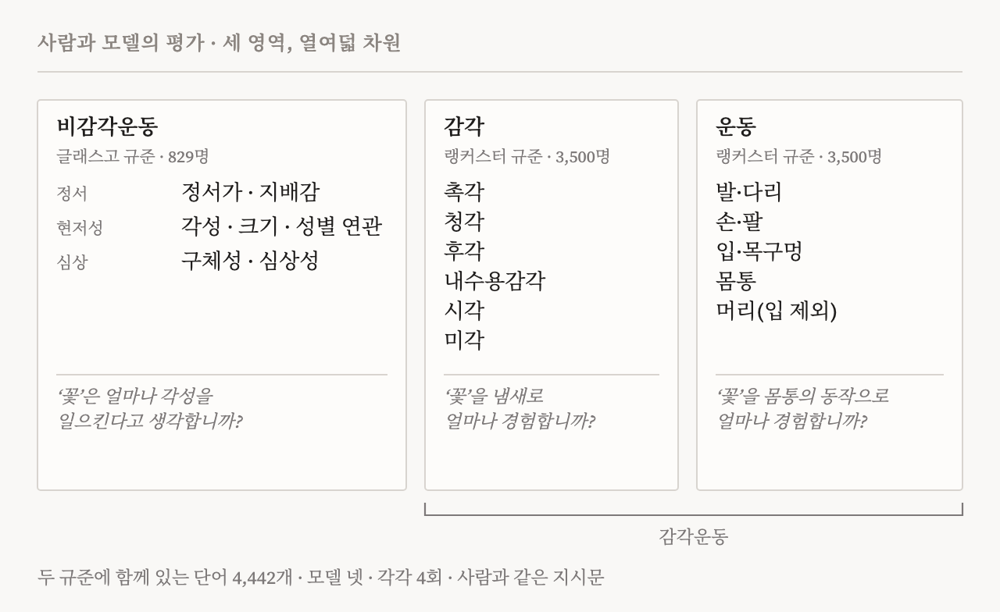
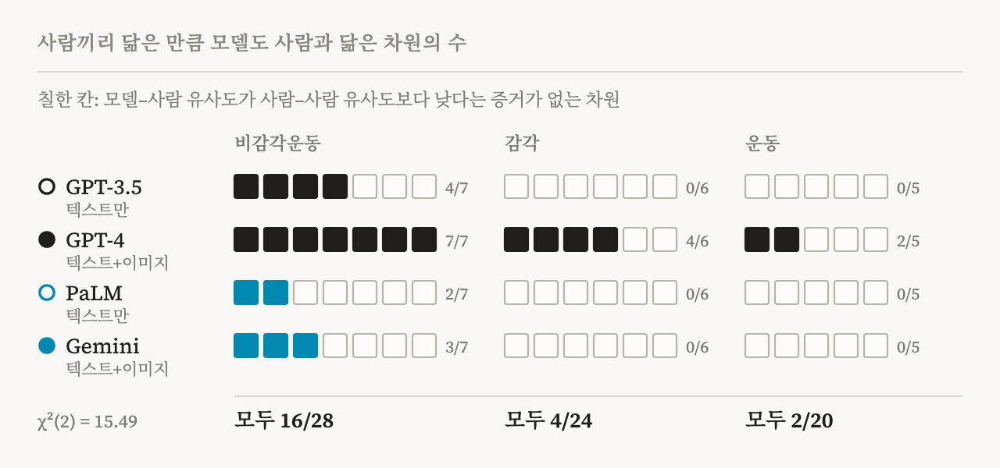
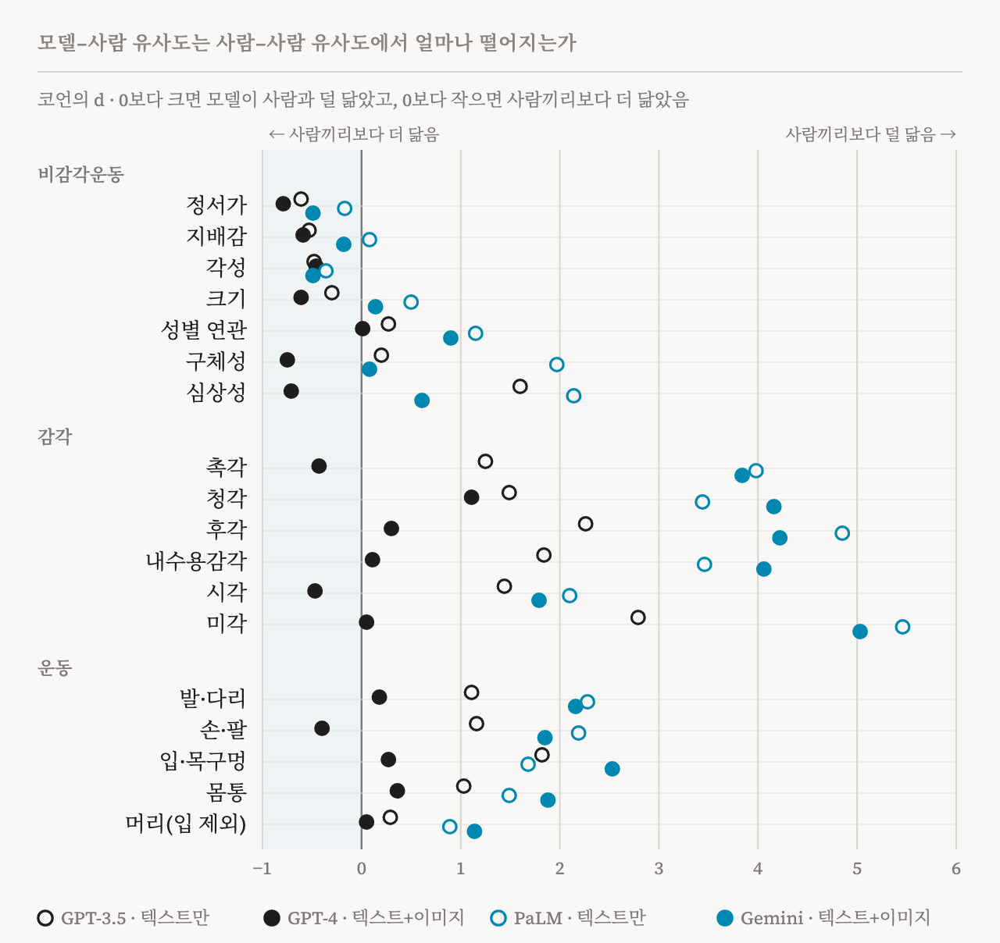
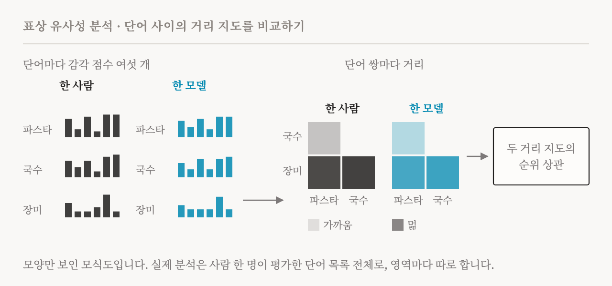

2025년, 『네이처 인간 행동(Nature Human Behaviour)』 9권에 「접지 없는 대형 언어 모델은 인간 개념의 비감각운동 특징은 되찾지만 감각운동 특징은 되찾지 못한다(Large language models without grounding recover non-sensorimotor but not sensorimotor features of human concepts)」라는 논문이 실렸습니다. 오하이오 주립대학교의 Qihui Xu와 홍콩 이공대학교의 Yingying Peng이 공동 제1저자이고, 프린스턴 대학교의 Samuel A. Nastase, 뉴욕 시립대학교의 Martin Chodorow, 홍콩 이공대학교의 Minghua Wu와 Ping Li가 함께 썼습니다.
논문이 묻는 것은 오래된 질문입니다. 장미 냄새를 맡아 보거나, 데이지 꽃잎을 만져 보거나, 들꽃 사이를 걸어 본 적 없이도 ‘꽃’이라는 개념을 온전히 가질 수 있을까요? 저자들은 감각과 운동 경험 없이 언어로 배운 대형 언어 모델(large language model, LLM)이 이 질문을 시험할 도구가 된다고 보고, LLM의 단어 평가를 사람의 평가와 견줍니다.
이 글은 논문의 본문과 방법을 빠짐없이 정리한 것입니다. 주장과 해석은 모두 저자들의 것입니다. ‘쉬운 풀이’ 상자는 읽기를 돕기 위해 덧붙인 설명과 비유로, 원문에는 없습니다.
언어만으로 개념을 배울 수 있는가
한쪽에는 인지가 감각과 운동 경험에 뿌리를 둔다는 이론들(grounded cognition)이 있습니다. 이 관점에서 감각은 지식으로 들어가는 문이고, 꽃을 보고 만지고 맡은 경험은 우리가 ‘꽃’을 표상하고 처리하는 방식의 일부입니다. 다른 쪽에는 몸이 없는 인공 신경망 모델과, 앞을 보지 못하거나 시력이 약한 사람들을 다룬 연구가 있습니다. 이 연구들은 직접적인 감각 경험 없이 언어만으로도 개념을 풍부하게 표상할 수 있다고 봅니다. 예를 들어 태어날 때부터 시력이 약한 사람들도 색 개념을 앞을 보는 사람들과 비슷하게 표상하고 다룹니다. 그렇다면 감각운동 입력이 없을 때 언어는 세계에 관한 개념 표상을 어디까지 채울 수 있을까요?
저자들은 사람을 대상으로 한 기존 연구에 한계가 있다고 지적합니다. 첫째, 개념 표상의 여러 차원을 충분히 다루지 않았습니다. 개념에는 감각운동 경험과 직접 이어지지 않는 부분도 있고, 그 개념이 불러일으키는 정서적 각성(arousal)과 정서가(valence)가 그런 예입니다. ‘꽃’은 꽃이라는 사물뿐 아니라 색과 모양, 손으로 만지고 코로 맡는 행동, 향기와 질감, 감정과 기억까지 불러올 수 있습니다. 둘째, 색 단어나 사물 단어처럼 시험한 단어의 범위가 좁아, 동작 동사와 추상 개념까지 아우르는 일상의 개념으로 넓히기 어렵습니다. 셋째, 시각이 없어도 사람은 촉각이나 몸속 감각 같은 다른 감각 통로를 쓸 수 있고, 이런 감각은 시각 지식과 상관을 보입니다. 영역 사이에 지식이 옮겨 갈 수 있으니, 사람 대상 연구에서는 개념 표상에 기여할 수 있는 여러 원천을 엄밀하게 통제하기 어렵습니다. 그래서 저자들은 언어에서 온 지식과 감각운동에서 온 지식을 가르려면, 비감각운동 측면에서 감각과 운동 측면까지 넓고 체계적인 범위의 개념 단어를 다뤄야 한다고 말합니다.
LLM은 이 질문을 시험할 새 길을 엽니다. 저자들에 따르면 LLM으로 (1) 언어만으로 어떤 구조를 얼마나 뽑아낼 수 있는지 가늠하고, (2) 텍스트와 이미지 같은 입력 양식(modality)이 학습에 어떤 영향을 주는지 살필 수 있습니다. GPT-3.5와 PaLM은 대규모 텍스트로만 학습했고, GPT-4와 Gemini는 언어와 함께 시각 입력도 학습했습니다. 입력 양식이 이렇게 제한되어 있는데도 이 모델들은 여러 인지 과제에서 놀랄 만큼 사람과 비슷하게 수행합니다. LLM이 겉으로 드러난 언어만 접하고도 통사 구조를 배울 수 있음을 보였듯이, 세계의 물리적이고 접지된 특징도 언어만으로 배울 수 있을지 모릅니다.
이 지점에서 견해가 갈립니다. 일부 연구자는 언어 자체가 이 모델들에게 대리 ‘몸’ 구실을 할 수 있다고 봅니다. 앞을 보지 못하는 사람들의 색 지식이 대부분 개념적이고 접지되지 않은 것과 비슷하다는 것입니다. 반대쪽에서는 사람에게도 인공 모델에게도 개념을 효율적으로 익히려면 멀티모달(multimodal) 경험이 꼭 필요하다고 봅니다. GPT-3 같은 모델은 사람이 20,000년 동안 읽어야 할 만큼의 텍스트에 기댑니다. 실제 세계와 주고받는 경험은 영역 사이의 지식 전이를 도와 이렇게 많은 언어 입력이 필요 없게 해 줄 수 있다는 것이 이쪽의 생각입니다.
두 가지 질문과 세 영역
저자들의 질문은 둘입니다. 첫째, 감각 접지 없이 학습한 최신 LLM은 인간 개념 표상의 어떤 측면을 되찾고 어떤 측면을 되찾지 못하는가. 둘째, 언어와 시각 입력을 함께 학습한 LLM은 언어로만 학습한 LLM보다 시각과 관련된 차원에서 사람과 더 잘 맞는가.
첫째 질문을 위해 저자들은 단어 개념 약 4,442개에서 사람과 최신 LLM 두 계열의 표상을 비교했습니다. OpenAI의 GPT-3.5와 GPT-4, Google의 PaLM과 Gemini입니다. 비교한 차원(dimension)은 18개이고, 비감각운동(non-sensorimotor), 감각(sensory), 운동(motor)의 세 영역(domain)으로 묶입니다(도판 1). 이 차원들은 사회·정서적 측면과 추상적인 심상에서 직접적인 몸의 경험까지, 앞선 연구들이 다뤄 온 어휘·개념 처리의 범위를 폭넓게 아우릅니다.

이 분류는 측정이 특정한 감각운동 경험을 직접 묻는지를 기준으로 한 조작적 구분입니다. ‘꽃’을 냄새로 얼마나 경험하는지 묻는 질문은 특정 감각 양식과 특정 행동 기관(effector)의 경험에 직접 닿으므로 감각운동 영역에 들어갑니다. ‘꽃’이 얼마나 각성을 일으키는지 묻는 질문은 특정한 감각운동 경험을 명시하지 않으므로 비감각운동 영역에 들어갑니다. 저자들은 이 구분이 비감각운동 차원에 체화(embodiment)가 전혀 없다는 뜻은 아니라고 강조합니다. 정서는 몸속 상태와 밀접하게 이어져 있을 수 있습니다. 다만 앞선 연구에서는 구체성 같은 비감각운동 차원보다 특정 감각에 관한 평가가 단어의 의미 처리를 더 잘 도왔습니다.
저자들이 보고하는 핵심 결과는 두 가지입니다. (1) LLM과 사람 표상의 유사성은 비감각운동 영역에서 감각 영역으로 가며 줄었고, 운동 영역에서 가장 작았습니다. (2) 시각 입력을 함께 학습한 모델은 시각과 관련된 차원에서 사람과 더 닮았습니다. 저자들은 이를 이렇게 해석합니다. 언어 안에서만 학습해도 개념 표상의 비감각운동 측면은 상당 부분 되찾지만, 감각운동 측면, 특히 운동 측면은 빈약하게 남는다. 경험을 시각으로 넓히면 시각뿐 아니라 심상성과 촉각처럼 관련된 차원에서도 사람과 더 잘 맞게 되며, 이는 여러 양식이 통합되면서 지식이 전이될 수 있음을 시사한다.
사람의 평가: 글래스고 규준과 랭커스터 규준
사람 쪽 자료는 공개된 두 단어 평가 규준(norms)입니다.
글래스고 규준(Glasgow Norms)은 영국 글래스고 대학교 공동체의 영어 모국어 화자에게서 모은 자료로, 영어 단어 5,553개를 9개 차원에서 평가했습니다. 참여자는 829명이고, 같은 참여자가 주어진 단어 묶음의 모든 차원을 평가했으며 단어 하나를 평균 33명이 평가했습니다. 저자들은 이 가운데 친숙도와 습득 연령을 뺐습니다. 친숙도는 의미나 개념 표상에 덜 기대고, 습득 연령은 이 연구의 초점이 아닐뿐더러 LLM에게 묻기에 타당한 질문도 아니기 때문입니다. 남은 일곱 차원은 원 규준의 주성분 분석에 따라 정서(정서가, 지배감), 현저성(salience: 각성, 크기, 성별 연관), 심상(mental visualization: 구체성, 심상성)의 세 묶음으로 나뉩니다.
랭커스터 감각운동 규준(Lancaster Sensorimotor Norms)은 아마존 메커니컬 터크(Amazon Mechanical Turk)의 숙련된 사용자에게서 모은 자료로, 영어 단어 약 40,000개의 감각운동 강도를 11개 차원에서 잽니다. 여섯 감각(촉각, 청각, 후각, 내수용감각(interoception), 시각, 미각)과 가장 흔한 다섯 행동 기관(발·다리, 손·팔, 입·목구멍, 몸통, 입을 뺀 머리)입니다. 참여자는 3,500명이고, 일상의 개념을 각 감각으로 얼마나 경험하는지, 또는 몸의 각 부분을 쓰는 동작으로 얼마나 경험하는지를 평가했습니다.
두 규준에 함께 있는 단어는 4,442개입니다(글래스고 규준의 5,553개 가운데). 저자들은 감각과 운동 영역을 이 단어들로 분석하고, 비감각운동 영역에는 글래스고 규준의 단어 전체를 썼습니다. 두 규준에 모두 있는 단어만으로 따로 분석해도 결과는 매우 일관되었다고 보고합니다(보충 자료 6절). 두 규준은 평가자 집단도 다릅니다. 그래서 저자들은 영역 사이의 차이가 인구 집단의 차이가 아니라 차원의 차이에서 온다는 것을 확인하기 위해, 규준과 모델 응답의 타당도를 따로 점검했습니다(뒤의 ‘결과 검증 2’).
모델에게 같은 설문을 하기
모델은 OpenAI API의 GPT-3.5(gpt-3.5-turbo-0301)와 GPT-4(gpt-4, 2023년 5월 28일~6월 11일 수집), Google API의 PaLM(PaLM2)과 Gemini(gemini-1.0-pro)를 썼습니다. PaLM은 일부 단어 목록을 평가하지 못해, 감각 차원은 단어 2,474개, 운동 차원은 4,095개의 평가만 모였습니다. 온도(temperature)는 0으로 두어 무작위 변동 없이 일관된 응답이 나오게 했고, 최대 토큰 길이는 응답이 잘리지 않도록 허용 상한(GPT-3.5, GPT-4, Gemini는 2,048, PaLM은 1,024)으로 두었습니다. 모델마다 같은 시험을 4회 되풀이해 응답의 일관성을 확인했습니다.
시험 절차는 사람 참여자가 받은 지시문을 따랐습니다. 먼저 차원을 설명합니다. 예를 들어 각성 차원의 지시문은 각성이 흥분과 차분함의 척도라고 설명하고, 어떤 단어가 각성을 일으키고 어떤 단어가 일으키지 않는지 풀어 쓴 다음, 각 단어를 1(전혀 각성시키지 않음)부터 9(매우 각성시킴)까지의 9점 척도로 평가하게 합니다. 그다음 평가할 단어 목록을 주면, 모델은 ‘단어 – 점수’ 형식으로 답합니다. 응답 형식을 맞추려고 지시문을 조금 고친 것 말고는 사람이 받은 지시와 같습니다.
단어 목록도 사람의 자료 수집 방식을 따랐습니다. 글래스고 규준의 5,553개 단어는 목록 40개로 나눴습니다(101개짜리 8개, 150개짜리 32개). 모델은 한 목록의 모든 단어를 한 차원에서 평가한 뒤 다음 차원으로 넘어갔고, 단어와 차원의 순서는 실행마다 무작위로 바꿨습니다. 랭커스터 규준 쪽은 단어를 구체성 4분위로 나눈 네 하위 목록에서 12개씩 뽑아 목록마다 48개를 만들고, 원 규준처럼 보정 단어와 통제 단어를 더해 58개 단어짜리 목록 93개를 만들었습니다.
한 가지 큰 조정이 있었습니다. 랭커스터 규준의 문항을 받은 모델은 자신에게는 생물학적 몸이 없어 단어를 감각하거나 움직여서 경험할 수 없다고 한결같이 답했습니다. 그래서 저자들은 지시문의 ‘당신은 얼마나 경험합니까(to what extent do you experience)’를 ‘사람들은 얼마나 경험합니까(to what extent do human beings experience)’로 바꾸고, 일관성을 위해 글래스고 규준에도 같은 변경을 적용했습니다. 저자들은 사람의 경험을 바탕으로 답하라고 해도 모델은 여전히 자기 내부 표상을 쓴다고 설명합니다. 그 표상은 사람이 쓴 방대한 텍스트로 학습한 것이므로, 모델의 응답은 사람들의 집단적인 개념 표상을 반영한다고 볼 수 있다는 것입니다. 또 랭커스터 규준의 온라인 평가 화면은 동작에 쓰는 다섯 신체 부위를 그림으로 보여 주었는데, GPT-3.5와 PaLM은 프롬프트로 이미지를 받을 수 없어서 저자들은 모든 모델의 프롬프트에서 신체 부위를 말로 설명했습니다.
결과 1: 차원별 상관
비교 방법은 두 가지입니다. 하나는 차원별 상관으로, 단어 하나가 각 차원에서 얼마나 높게 평가되는지를 사람과 모델이 비슷하게 보는지 봅니다. 다른 하나는 표상 유사성 분석(representational similarity analysis, RSA)으로, 여러 차원을 함께 놓았을 때 단어들이 서로 어떻게 배치되는지를 비교합니다. 모든 P값은 거짓 발견률(false discovery rate, FDR)을 통제하는 방식으로 다중 비교를 보정했고, 결과 절에서만 검정 157개를 함께 보정했습니다.
저자들은 먼저 차원마다 모델의 평가와 사람의 평가 사이의 스피어먼 순위 상관(Spearman rank correlation)을 집단 수준과 개인 수준에서 구했습니다. 집단 수준에서는 단어마다 모델의 4회 실행을 평균하고, 사람의 평가는 참여자 전체를 평균했습니다. 그 결과 OpenAI 모델과 Google 모델 모두 비감각운동 차원 대부분에서 사람의 평가와 강한 상관(Rs > 0.50)을 보였고, 감각과 운동 차원에서는 상관이 유의하게 약했습니다. 비감각운동 차원 일곱 개와 감각운동 차원 열한 개의 모델–사람 상관을 견준 맨–휘트니 U 검정(Mann–Whitney U test)이 네 모델 모두에서 이 차이를 뒷받침했습니다.
결과 2: 개인 수준의 비교
집단 평균만 보면 사람들 사이의 개인차가 가려집니다. 그래서 저자들은 개인 수준에서도 비교했습니다. 사람 참여자를 둘씩 짝지어 평가의 스피어먼 상관을 구하고(사람–사람), 모델의 실행 하나와 사람 참여자 하나를 짝지어 같은 상관을 구했습니다(모델–사람). 그러면 차원마다 분포가 다섯 개 생깁니다. 사람–사람, GPT-3.5–사람, GPT-4–사람, PaLM–사람, Gemini–사람입니다.
질문은 이렇습니다. 모델 하나의 응답은 사람 한 명의 응답과, 사람 한 명이 다른 한 명과 닮은 만큼 닮았는가? 저자들은 사람–사람 상관을 사람 사이 일치도의 기준으로 삼고, 독립 표본 t 검정으로 모델–사람 분포가 사람–사람 분포와 유의하게 다른지 보았습니다. 차이의 크기는 코언의 d(Cohen's d)로 쟀습니다. d가 음수이면 그 차원에서 그 모델과 사람의 유사도가 사람끼리의 유사도보다 크다는 뜻입니다.
짝은 이렇게 만들었습니다. 글래스고 규준에서 참여자는 단어 목록의 일부만 평가했으므로 상관은 목록 안에서 구해 합쳤고, 사람끼리의 짝은 모두 22,730개, 모델–사람 짝은 5,476개입니다. 랭커스터 규준은 단어가 워낙 많아 참여자 몇 명만 평가한 단어가 많으므로, 공통 단어가 50개를 넘는 짝만 썼습니다. 사람끼리의 짝은 감각 차원마다 105개, 운동 차원마다 196개이고, 모델–사람 짝은 감각 차원마다 224개, 운동 차원마다 440개입니다.
결과는 영역에 따라 뚜렷하게 갈렸습니다(도판 2). 모델–사람 분포가 사람–사람 분포보다 낮다는 증거가 없는 경우, 곧 모델이 사람끼리만큼 사람과 닮은 경우를 세면, 비감각운동 영역에서는 모델–차원 조합 28개 가운데 16개였습니다. 감각 영역에서는 24개 가운데 4개, 운동 영역에서는 20개 가운데 2개로 줄었습니다(χ²(2) = 15.49, P < 0.001).
모델별로 보면 차이가 더 분명합니다. 비감각운동 영역의 일곱 차원에서, GPT-4는 사람끼리보다 덜 닮았다는 증거가 있는 차원이 하나도 없었습니다. 그런 차원이 GPT-3.5는 4개, Gemini는 3개, PaLM은 2개였습니다. 감각 영역의 여섯 차원에서는 이 수가 GPT-4는 4개로 줄고 나머지 모델은 모두 0개가 되었습니다. 운동 영역의 다섯 차원에서는 GPT-4가 2개, 나머지 모델은 여전히 0개였습니다. 저자들은 이 개인 수준 분석이, 비감각운동 차원에서 감각운동 차원으로 갈수록 모델과 사람이 점점 더 갈라진다는 것을 보여 준다고 말합니다.

차원별 코언의 d(도판 3)에서도 같은 흐름이 보입니다. 정서가와 각성에서는 네 모델 모두 d가 음수였고, 비감각운동 일곱 차원에서 GPT-4의 d는 가장 커도 0.01에 그쳤습니다. 감각 영역에서 PaLM과 Gemini의 d는 1.79에서 5.46 사이로 컸고, 가장 큰 값은 미각에서 PaLM이 보인 5.46입니다. 운동 영역에서 두 Google 모델의 d는 0.89에서 2.53 사이였습니다. GPT-3.5의 d는 감각과 운동 영역에서 0.29에서 2.79 사이였고, GPT-4는 같은 영역에서도 −0.47에서 1.11 사이로 다른 모델보다 훨씬 작았습니다.

결과 3: 표상 유사성 분석
차원별 상관은 차원을 하나씩 따로 봅니다. 그러면 여러 차원이 함께 한 단어의 전체 표상을 이루는 방식과, 단어들이 서로 이어지는 방식을 놓칠 수 있습니다. 저자들의 예를 들면, ‘파스타’와 ‘장미’는 둘 다 후각 점수가 높을 수 있습니다. 그래도 사람들은 ‘파스타’가 ‘장미’보다 ‘국수’와 더 닮았다고 봅니다. 냄새뿐 아니라 생김새와 맛도 함께 따지기 때문입니다.
RSA는 이 점을 다룹니다(도판 4). 저자들은 영역마다 단어를 벡터로 나타냈습니다. 예를 들어 ‘파스타’의 감각 벡터는 여섯 감각 차원의 평가로 이루어집니다. 그다음 단어 벡터 사이의 유클리드 거리(Euclidean distance)로 표상 비유사성 행렬(representational dissimilarity matrix, RDM)을 만들었습니다. 사람 한 명마다, 모델 하나마다 하나씩입니다. 그리고 각 모델의 RDM과 각 사람의 RDM 사이의 스피어먼 상관을 구해, 영역마다 사람 전체와 모델 하나 사이의 유사도 분포를 얻었습니다.
RDM을 만들 때 스피어먼 상관이 아니라 유클리드 거리를 쓴 데에도 이유가 있습니다. 영역마다 벡터의 차원이 작아서(비감각운동 7, 감각 6, 운동 5) 순위를 매기는 방식은 덜 믿을 만하고 작은 차이에 민감해지기 때문입니다. 유클리드 거리는 척도에 민감하므로, 각 차원의 평가를 z 점수로 표준화한 뒤 벡터를 만들었습니다. 분석에는 공통 단어가 50개 이상인 사람–모델 짝만 썼습니다. 그래서 비감각운동 영역에서는 RDM 짝 829개를 두 계열 모두에 썼고, 감각과 운동 영역에서는 GPT 모델에 435개와 443개, Google 모델에 272개와 323개를 썼습니다.

통계 검정은 모델 계열별로 따로 했습니다. ‘영역’과 ‘모델’을 두 요인으로 둔 혼합 효과 분산 분석(mixed-effects ANOVA)에서, OpenAI 모델은 영역의 주효과가 유의했습니다(η²p = 0.46). 감각 영역은 비감각운동 영역보다 유사도가 낮았지만 차이는 작았고(d = −0.13), 운동 영역은 비감각운동 영역보다 크게 낮았으며(d = −1.87) 감각 영역보다도 낮았습니다(d = −1.58). Google 모델도 영역의 주효과가 유의했습니다(η²p = 0.70). 감각 영역(d = −2.46)과 운동 영역(d = −2.24) 모두 비감각운동 영역보다 크게 낮았고, 운동 영역과 감각 영역 사이에는 유의한 차이가 없었습니다(P = 0.077).
저자들은 이 결과를, LLM의 개념 표상과 단어들의 짜임새가 비감각운동 영역에서 사람과 가장 가깝고, 감각 영역에서 약해지며, 운동 영역에서 가장 약하다는 뜻으로 읽습니다. 앞의 분석들과 마찬가지로, 감각운동과 관련된 측면으로 갈수록 LLM이 사람의 개념 표상을 되찾는 힘이 점점 약해진다는 것입니다.
시각 학습이 더해지면
감각운동 차원에서 모델과 사람의 차이가 커진다는 결과에서, 저자들은 사람 같은 개념 표상을 얻으려면 접지된 경험이 필요할 수 있다는 가능성을 봅니다. 그래서 두 번째 질문을 던집니다. 언어와 시각 입력을 함께 학습한 LLM(GPT-4와 Gemini, 이하 시각 LLM)은 언어 하나로만 학습한 LLM(GPT-3.5와 PaLM, 이하 텍스트 LLM)보다 사람의 감각운동 개념 표상과 더 잘 맞는가? 공개된 정보에 따르면 GPT-4는 텍스트와 이미지로 사전 학습되었고, Gemini는 자연 이미지, 도표, 스크린숏, PDF, 동영상 같은 다양한 시각 입력과 언어를 통합하도록 사전 학습되었습니다. GPT-3.5와 PaLM2는 언어만으로 사전 학습되었습니다.
이 최신 모델들의 학습 세부는 공개되어 있지 않아 시각 학습의 효과만 떼어 내기는 어렵습니다. 그래서 저자들은 시각 학습이 더해진 것과, 시각 LLM과 텍스트 LLM의 정렬 차이 사이에 관련이 있는지를 시험적으로 분석했습니다. 논리는 이렇습니다. 시각 학습이 모델과 사람의 정렬에 영향을 준다면, 그 효과는 시각 차원과, 심상성처럼 시각적 해석이 어느 정도 들어가는 차원에서 특히 뚜렷해야 합니다.
저자들은 먼저 차원마다 ‘시각 연관 강도(visual association strength)’를 쟀습니다. 사람의 평가 자료에서 각 차원과 시각 차원 사이의 스피어먼 상관을 구한 것으로, 절댓값이 클수록 시각과 강하게 연관된 차원입니다. 구체성(Rs = 0.62)과 심상성(Rs = 0.69)은 시각과 강하게 연관되었고, 미각(Rs = 0.01)과 몸통(R = 0.02)은 거의 연관이 없었습니다.
그다음 차원마다 시각 LLM과 텍스트 LLM의 모델–사람 상관(피셔 Z 변환한 값)의 차이를 구했습니다. OpenAI는 GPT-4와 GPT-3.5를, Google은 Gemini와 PaLM을 비교했습니다. 값이 클수록 그 차원에서 시각 LLM이 텍스트 LLM보다 사람과 더 잘 맞는다는 뜻입니다. 그리고 계열마다 시각 연관 강도로 이 정렬 변화를 예측하는 선형 회귀를 따로 돌렸습니다.
OpenAI 모델에서는 시각 연관 강도가 GPT-4의 정렬 변화를 양의 방향으로 예측했습니다(B = 0.99, P < 0.001). 정렬 변화의 분산 가운데 약 70%(R² = 0.70)를 차원의 시각 연관 강도로 설명할 수 있었습니다. 저자들은 이를 시각 입력이 GPT-4가 사람의 개념 표상과 더 잘 맞게 된 주요 요인이라는 뜻으로 읽고, 시각 학습의 중요한 역할을 보여 준다고 말합니다. Google 모델에서도 시각 연관 강도가 Gemini의 정렬 변화를 유의하게 양의 방향으로 예측했습니다(B = 0.43, P = 0.033). 설명된 분산은 약 26%(R² = 0.26)였고, 저자들은 이 결과도 OpenAI 모델에서처럼 시각 입력이 사람 같은 개념 표상을 얻는 데 기여함을 보여 준다고 봅니다.
결과 검증 1: 단어의 구체성
감각운동 영역에서 모델과 사람이 갈라지는 현상은 단어의 구체성을 고려해도 남을까요? 앞선 연구는 LLM이 추상어, 곧 접지에 덜 기댄다고 여겨지는 단어에서는 사람 표상의 감각운동 측면도 잡아낼 수 있다고 시사했습니다. 저자들은 두 방법으로 구체성의 영향을 따졌습니다.
첫째, 구체성을 통제한 사람–모델 편상관(partial correlation)을 구했습니다. 이 편상관은 원래 상관과 매우 비슷했습니다(Rs = 0.93). 구체성을 보정해도 결과의 양상이 남는다는 뜻입니다. 둘째, 구간 분석입니다. 단어를 구체성 순으로 늘어놓고 100개씩 구간으로 나눈 다음, 구간마다 구체성의 중앙값과 그 구간 단어들의 모델–사람 상관을 기록했습니다. 그러면 모델과 차원마다 구체성에 따른 모델–사람 상관이 나옵니다. 구체성, 모델, 영역을 예측 변수로 둔 선형 회귀는 모델–사람 상관(피셔 Z 변환한 값)의 분산 약 53%를 설명했지만, 구체성의 주효과를 뒷받침할 믿을 만한 증거는 없었습니다(B = −0.00, P = 0.785). 저자들은 단어의 구체성이 세 영역 전반에서 모델과 사람의 정렬이나 어긋남과 관련된다는 증거는 없다고 결론짓습니다. 다만 구체성, 영역, 모델 사이의 상호작용은 관찰되었습니다. 예를 들어 감각 영역에서는 더 구체적인 단어일수록 모델–사람 상관이 강할 수 있습니다(보충 자료 5.4절, 해석은 7.2절).
결과 검증 2: 다른 규준으로 다시 재기
LLM을 인지 모형으로 쓰려면 응답이 타당한지 따져야 합니다. 저자들은 사람 대상 검사의 표준 타당화 방법을 따라, 네 모델을 글래스고·랭커스터 규준과 관련된 다른 규준들로 확인했습니다. 글래스고 규준 쪽은 정서가·각성·지배감 규준(Warriner et al., 2013), 심상성 규준(Cortese & Fugett, 2004), 구체성 규준(Brysbaert et al., 2014)을 썼습니다. 랭커스터 규준은 직접 견줄 만한 타당화 규준이 없어서, 개념적으로 비슷한 맛(taste)과 쥐기(grasp) 평가(Amsel et al., 2012)을 썼습니다. 사람의 평가에서 맛은 미각 차원과 강하게, 쥐기는 손·팔과 촉각 차원과 중간 정도로 상관을 보일 것으로 예상됩니다. 이 규준들을 고른 이유는 세 가지입니다. 공개되어 있고, 사람 대상 연구에 널리 쓰여 타당성이 있으며, 모델이 사람과 강한 상관(Rs > 0.6)을 보인 차원을 다룹니다.
절차는 이렇습니다. 모델에게 타당화 규준의 문항에 답하게 하고, 그 응답과 사람의 평가 사이의 상관을 구했습니다. 그다음 같은 모델이 원래 규준(글래스고·랭커스터)과 타당화 규준에서 내놓은 평가끼리의 상관도 구했습니다. 사람의 평가에서도 두 규준 사이의 상관을 구해 기준으로 삼았습니다.
| 모델 | 차원 | 원래 규준 | 타당화 규준 |
|---|---|---|---|
| GPT-3.5 | 정서가 | 0.90 | 0.83 |
| GPT-3.5 | 지배감 | 0.62 | 0.66 |
| GPT-3.5 | 각성 | 0.64 | 0.47 |
| GPT-3.5 | 구체성 | 0.71 | 0.63 |
| GPT-4 | 정서가 | 0.93 | 0.88 |
| GPT-4 | 지배감 | 0.63 | 0.67 |
| GPT-4 | 각성 | 0.64 | 0.43 |
| GPT-4 | 구체성 | 0.93 | 0.87 |
| GPT-4 | 심상성 | 0.91 | 0.77 |
| GPT-4 | 촉각 | 0.76 | 0.88 |
| GPT-4 | 손·팔 | 0.66 | 0.88 |
| PaLM | 정서가 | 0.78 | 0.44 |
| Gemini | 정서가 | 0.87 | 0.83 |
| Gemini | 각성 | 0.66 | 0.15 |
| Gemini | 구체성 | 0.75 | 0.66 |
타당화 규준에서 구한 모델–사람 상관은, Gemini의 각성 차원을 빼면, 원래 규준에서 구한 것과 비슷했습니다. 예를 들어 GPT-3.5와 사람의 정서가 상관은 타당화 규준에서 0.83, 글래스고 규준에서 0.90입니다. 예외인 Gemini의 각성은 원래 규준에서 0.66, 타당화 규준에서 0.15입니다.
| 모델 | 차원 | 모델의 평가 | 사람의 평가 |
|---|---|---|---|
| GPT-3.5 | 정서가 | 0.90 | 0.93 |
| GPT-3.5 | 지배감 | 0.82 | 0.69 |
| GPT-3.5 | 각성 | 0.55 | 0.62 |
| GPT-3.5 | 구체성 | 0.61 | 0.93 |
| GPT-4 | 정서가 | 0.92 | 0.93 |
| GPT-4 | 지배감 | 0.86 | 0.69 |
| GPT-4 | 각성 | 0.54 | 0.62 |
| GPT-4 | 구체성 | 0.88 | 0.93 |
| GPT-4 | 심상성 | 0.83 | 0.89 |
| GPT-4 | 촉각 | 0.55 | 0.55 |
| GPT-4 | 손·팔 | 0.68 | 0.55 |
| PaLM | 정서가 | 0.42 | 0.91 |
| Gemini | 정서가 | 0.82 | 0.91 |
| Gemini | 각성 | 0.39 | 0.60 |
| Gemini | 구체성 | 0.58 | 0.93 |
또 OpenAI 모델의 평가가 두 규준 사이에서 보인 상관은, 사람의 평가가 두 규준 사이에서 보인 상관만큼 높았습니다. 예를 들어 GPT-4의 손·팔 평가가 타당화 규준과 랭커스터 규준 사이에서 보인 상관은 0.68이고, 사람의 평가에서는 0.55입니다. 저자들은 여러 모델과 차원에서 이렇게 일관된 결과가 나왔으므로, 주요 결과는 특정 프롬프트에 기댄 것이 아니라 대체로 모델의 능력을 반영한다고 결론짓습니다.
저자들의 해석
저자들은 이 연구를, LLM으로 개념 지식 습득의 한계를 시험한 것이라고 정리합니다. 사람의 개념 지식 가운데 언어 학습만으로, 또는 언어와 시각 학습을 합쳐서 되찾을 수 있는 것과 없는 것을 수량화했다는 것입니다. 언어 안에서만 학습해도 정서가와 정서적 각성 같은 비감각운동 차원에서는 사람 수준의 개념 표상을 얻지만, 감각운동 지식의 표상은 빈약했습니다. 저자들은 이 결과가 몸이 없는 인공 신경망 모델과, 태어날 때부터 앞을 보지 못하거나 시력이 약한 사람의 개념 표상이 앞을 보는 사람과 닮았다는 앞선 연구를 넓힌다고 말합니다. 비감각운동에서 감각운동까지 넓은 범위의 개념을 체계적으로 견주자, LLM과 사람 표상의 유사성이 점차 줄고 감각운동 영역에서 차이가 커졌습니다. 저자들은 여기서 언어가 복잡한 개념을 빚는 범위와, 사람 수준의 개념 지식을 흉내 내는 데 멀티모달 입력이 중요하다는 점을 봅니다.
‘꽃’으로 돌아가 보겠습니다. 언어는 단어들이 맥락 안에서 맺는 분포적 관계에서 드러나는 만큼은 ‘꽃’의 함의를 잡아낼 수 있습니다. ‘이 꽃은 향기가 즐겁다’ 같은 문장에서 긍정적인 정서가가 생길 수 있습니다. 그러나 ‘꽃’의 감각운동 경험은 언어적 맥락을 가로지르며 개념 지식을 암묵적으로 빚고, 주변 세계의 사물과 경험 사이에 다양한 관계를 만들 수 있습니다. 진한 향기, 꽃잎을 쓰다듬을 때의 매끈한 감촉, 깊은 시각적 아름다움까지, 사람의 ‘꽃’ 표상은 이 다양한 경험과 상호작용을 하나의 범주로 묶습니다. 저자들은 한 개념이 서로 이어진 의미와 감각 강도의 결절점이 되는 이런 연합적 지각 학습은 언어만으로는 이루기 어려울 수 있고, 개념을 온전히 감각하고 행동하고 지각적으로 표상하려면 사람이 겪는 것과 비슷한 실제 세계와의 상호작용이 필요할 것이라고 말합니다.
저자들은 감각 차원보다 운동 차원에서 사람과 LLM의 차이가 더 컸다는 점에 주목합니다. 앞선 연구가 덜 다룬 영역입니다. 저자들이 내놓는 설명은 둘입니다. (1) 운동 측면은 언어로 덜 자주 묘사되므로 LLM이 언어에서 배우기 더 어렵습니다. (2) 운동 표상은, 언어로 배울 수 있는 색 같은 감각 개념과 달리 몸의 경험에 더 크게 기댑니다. 운동 피질이 손상되면 동작 단어의 처리도 손상된다는 연구 역시 체화가 필요하다는 점을 보여 준다고 저자들은 덧붙입니다. 이는 물리적 상식과 행동에 관한 입력이 없는 LLM이 운동 개념을 표상하는 데 한계가 있음을 다시 보여 준다는 것입니다.
멀티모달 학습에 관해서는, 시각 입력을 함께 학습한 LLM이 시각 차원뿐 아니라 촉각과 심상성처럼 시각과 관련된 차원에서도 사람과 더 잘 맞았다는 점을 ‘전체는 부분의 합보다 크다’는 멀티모달 학습의 이점으로 봅니다. 이런 표상 전이는 사람에게서도 잘 관찰됩니다. 사람은 사물의 모양을 시각과 촉각 양쪽으로 익힐 수 있고, 사물을 볼 때와 만질 때 모두 외측 후두 복합체(lateral occipital complex)가 활성화됩니다. 시각 LLM은 표상을 연속적인 고차원 임베딩(embedding) 공간에 담으므로, 여러 양식의 입력이 이 공간에서 임베딩을 합치거나 옮길 수 있습니다. 저자들은 이 공간의 매끄럽고 연속적인 구조 때문에 한 양식에서 얻은 지식이 관련된 다른 양식으로 퍼지는 것처럼 보일 수 있다고 말합니다. 그리고 모델이 감각운동 경험을 온전히 갖추지 않고도 사람 같은 개념 표상에 가까워질 수 있고, 부분적인 접근만으로도 사람 경험의 상당 부분을 아우를 수 있을 가능성을 제기합니다. 태어날 때부터 앞을 보지 못하거나 시력이 약한 사람과 앞을 보는 사람의 표상이 비슷한 까닭도 여기서 설명될 수 있다고 봅니다.
앞으로의 연구로 저자들은 멀티모달 모델에 감각 접근이 얼마나 필요한지, 영역 사이의 지식 전이가 어디까지 가능한지를 듭니다. 음성과 텍스트를 함께 처리하는 Whisper나, 시각-언어-행동 모델 RT-2처럼 더 많은 양식을 통합하는 방향에도 기대를 겁니다. 센서 자료와 로봇으로 보강된 LLM이 물리 세계를 능동적으로 추론하고 그 안에서 행동하는 미래를 그리며, 이 연구가 학습 자료의 개선과 멀티모달 통합의 방향에 기여할 수 있다고 말합니다.
LLM이 사람의 인지에 관해 무엇을 알려 주는지를 두고 저자들은 이렇게 말합니다. LLM은 언어 안의 분포적 관계가 폭넓은 의미 처리를 떠받칠 수 있느냐는 오래된 논쟁을 되살렸습니다. 동시에 텍스트 자료와 불완전한 감각운동 입력으로는 사람 같은 감각운동 개념 이해에 이르지 못한다는 한계는 언어 학습의 경계를 긋고, 사람의 개념 지식에서 접지가 중요하다는 점을 드러냅니다. 이런 점에서 저자들은 LLM을 사람 인지의 ‘어떻게 가능한가(how-possibly)’ 모형으로 봅니다.
끝으로 저자들은 학습의 효율을 짚습니다. LLM은 개념 표상의 일부 측면, 특히 비감각운동 차원과 이따금 몸과 관련된 차원을 근사할 수 있지만, 그러려고 사람이 평생 접하는 언어보다 몇 자릿수 많은 텍스트를 소비하고 수십억 개의 매개변수로 극도로 복잡하게 작동합니다. 저자들은 극한에서는 언어만으로 멀티모달 지식을 합성할 수 있다 해도 이런 학습은 비효율적이라고 봅니다. 사람의 학습과 지식 표상은 처음부터 멀티모달이고, 체화되어 있으며, 상호작용적이라는 것입니다.
저자들이 밝힌 한계
첫째, 언어입니다. 이 연구를 포함해 LLM과 사람의 언어 처리를 견준 연구는 대부분 영어에 머물러 있습니다. 언어 구조, 체화 효과, 신경 처리가 언어마다 다를 수 있으므로 이는 한계입니다. 다만 프랑스어와 독일어에서도 운동 동사가 비운동 동사보다 운동 관련 뇌 활성을 비슷하게 일으켰다는 연구가 있어, 저자들은 영어에서 얻은 결과가 다른 언어로 일반화될 수 있다고 봅니다. 다양한 언어로 결과를 검증하고 넓히는 연구를 제안합니다.
둘째, 학습 방식입니다. 예를 들어 GPT-3.5는 다음 토큰 예측으로 사전 학습된 뒤, 사람이 정답을 표시한 자료로 하는 지도 학습과 사람 피드백 강화 학습(reinforcement learning with human feedback, RLHF)으로 다듬어졌습니다. 사람은 비언어적 자원을 바탕으로 정답이나 피드백을 주므로, 이 단계에서 비언어적 지식이 들어올 수도 있습니다. 저자들은 RLHF에는 쿨백–라이블러 발산(Kullback–Leibler divergence) 벌점 같은 장치가 있어 미세 조정된 모델이 사전 학습된 모델에서 크게 벗어나지 않으므로, 이 기법들이 주요 결과를 바꾸지는 않는다고 봅니다. RLHF가 실제 세계의 비언어적 경험에 바탕한 사람의 선호를 간접적으로 들여올 수는 있어도, 모델의 학습은 여전히 주로 언어 입력이 이끈다는 것입니다.
셋째, 모델이 공개되어 있지 않다는 점입니다. 저자들은 이 점을 핵심 한계로 꼽습니다. 각 학습 방식, 특히 RLHF의 영향을 따로 떼어 이해하기 어렵기 때문입니다. 그래서 LLM이 언어와 체화된 경험을 어떻게 익히고 처리하는지에 관한 결론은 이 점을 감안해 해석해야 하고, LLM 연구에 더 많은 투명성이 필요하다고 강조합니다. 한편 최근 공개된 고성능 오픈소스 모델 DeepSeek-V3도 GPT-4와 비슷한 결과를 보였다고 보고합니다(보충 도판 5). LLM이 비감각운동 의미는 잘 잡지만 감각과 운동의 미묘한 특징에서는 여전히 어려움을 겪는다는 결론을 뒷받침한다는 것입니다. 저자들은 더 작고 접근하기 쉬운 모델로 예측 기반 학습, 지도 학습, 상호작용 기반 강화 학습의 역할을 견주는 연구를 제안합니다. 여러 지식 자원을 활용하고 환경과 상호작용하는 것은 사람의 언어와 개념 발달에서 핵심적이고 효율적인 기제로 오래 인정받아 왔기 때문입니다.
LLM에서 모은 자료와 분석 코드는 OSF(osf.io/kguwd)와 GitHub(qxu1994/LLM_grounding)에 공개되어 있습니다.
맺음말
저자들은 사람과 LLM의 단어 평가를 비감각운동, 감각, 운동의 세 영역에 걸쳐 견주었습니다. 집단 수준의 상관, 개인 수준의 비교, 표상 유사성 분석 모두에서 같은 순서가 나왔습니다. 정서가와 각성처럼 특정 감각을 묻지 않는 차원에서 LLM은 사람과 잘 맞았고, 감각 차원에서는 덜 맞았으며, 몸의 동작을 묻는 운동 차원에서 가장 덜 맞았습니다. 이미지도 함께 학습한 GPT-4와 Gemini는 시각과 관련이 큰 차원일수록 텍스트로만 학습한 모델보다 사람과 더 잘 맞게 되었습니다. 이 양상은 단어의 구체성을 통제해도, 다른 규준으로 다시 재도 유지되었습니다.
“저자들은 이렇게 끝맺습니다. 꽃을 떠올릴 때 마음에 오는 것은 이름만이 아니라, 시각과 촉각과 향기와 지난 감각운동 경험이 깊은 감정과 얽힌 생생한 교향곡이고, 말만으로는 다 담을 수 없을 만큼 풍부한 경험이라고.”